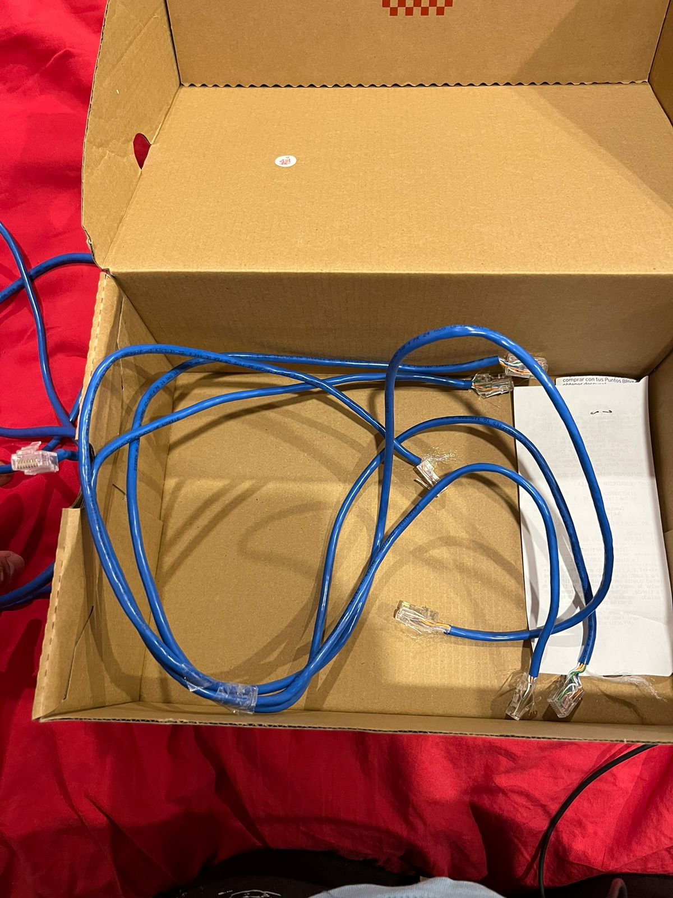
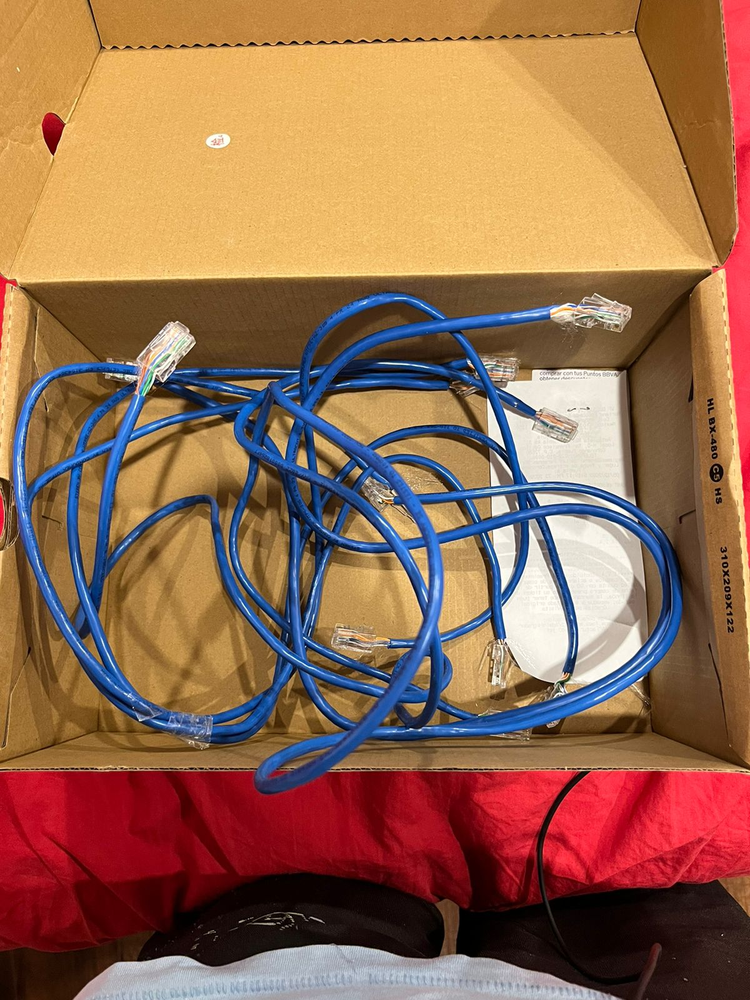

Practica 5: “Cables de Red”
|
1. Objetivo General
Conocer, identificar y comprobar el funcionamiento de los cables de red estructurado.
|
2. Objetivos específicos
-
Investigar la configuración de los cables de red estructurados: Directo y Cruzado
-
Investigar y explicar la forma de probar un cable de red directo y uno cruzado.
-
Armar 3 cables de red directos y probarlos.
-
Armar 3 cables de red cruzados y probarlos.
|
3. Material
-
Cable de red para armar
-
Cabezales de ethernet
-
Pinza ponchadora de cable de red
|
|
Cable directo

|
|
Cable cruzado

|